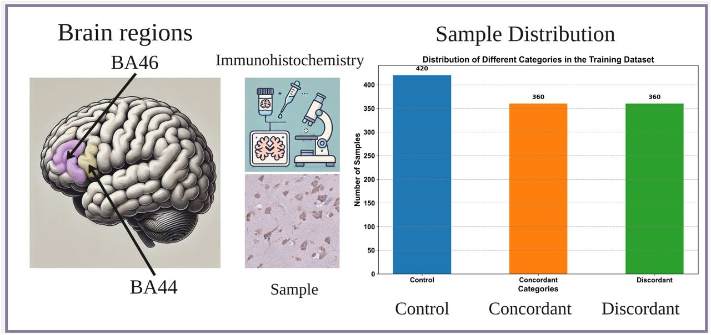

EPSRC IAA: Neuro BioMark – Precision Biomarker Detection Platform for Enhanced ALS Diagnosis
This project aims to develop an advanced, accessible diagnostic tool for Amyotrophic Lateral Sclerosis (ALS). Using machine learning, the tool analyses neuroimaging biomarkers to assist in early diagnosis and patient stratification. It provides visualisations and data-driven insights to support clinical decision-making.
- Collaborators: University of Aberdeen, Prof Jenna Gregory (Gregory Laboratory)
- PI: Dr Marta Vallejo
- Funding Body: EPSRC-IAA
- Status: Active
